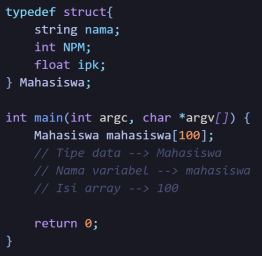
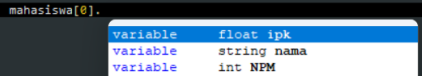
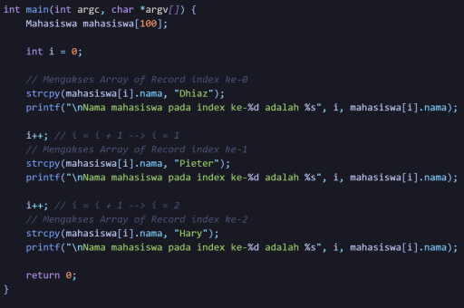
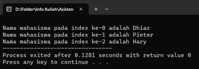
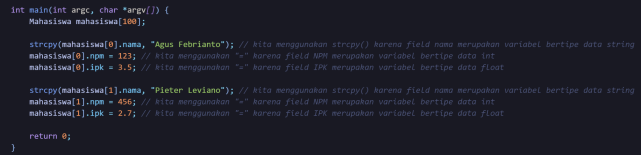
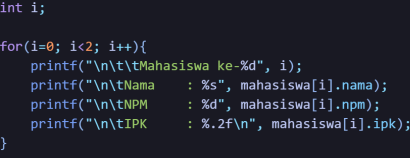
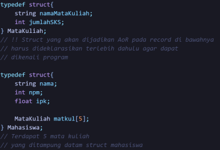
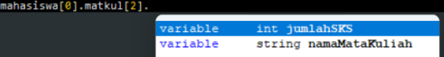
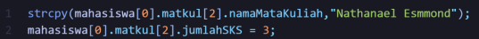
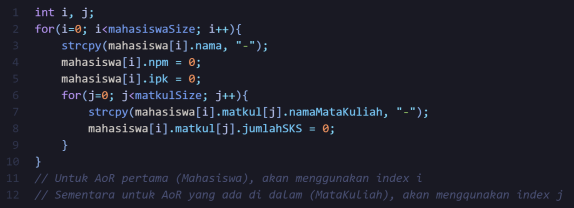

19-06-2024
120k Suka

Array adalah sekumpulan variabel dengan tipe data yang sama dan disimpan secara berurutan, diakses dengan menggunakan index yang merupakan angka pengarah posisi data yang disimpan. Sedangkan Record merupakan sebuah tipe data bentukan yang menyimpan Kumpulan atribut/data yang sama maupun berbeda-beda. Secara singkat AoR dapat dipahami sebagai sekumpulan variabel dengan tipe data bentukan yang disimpan secara berurutan.
 Dengan cara yang sama ini kita dapat menggunakan tipe data bentukan untuk mendeklarasikan banyak Mahasiswa seperti gambar di atas.
b) Mengakses Index Pada Array of Record
 Pada gambar di atas setelah pemanggilan variabel array kurung siku yang berisi index digunakan, diikuti oleh tanda titik (.) yang akan menampilkan secara otomatis akses kepada field yang tersedia.
  Gambar di atas ini merupakan hasil dari contoh cara dalam mengakses field pada AoR yang dapat di lihat pada gambar sebelumnya.
c) Pengisian dan Pengubahan Data
namaVariabel[index].field = nilaiBaru;
 Digunakan strcpy() untuk mengisi atau merubah nilai dengan tipe data string, selain daripada itu dapat digunakan simbol sama dengan(=).
d) Penggunaan Perulangan dalam Array of Record  Seperti pada gambar di atas perulangan dapat digunakan dalam mengubah, menampilkan atau pun mengisi nilai field dengan mudah pada AoR.
1. Deklarasi  Pada gambar diatas terpapar contoh dari Array of Record dalam Array of Record yang mana MataKuliah matkul[5] di dalam Mahasiswa. Secara singkat “Mahasiswa memiliki atribut berupa nama, NPM, IPK, dan 5 MataKuliah, di mana MataKuliah memiliki 2 atribut yaitu namaMataKuliah dan jumlahSKS. Hal penting yang harus diperhatikan juga adalah struct yang akan menjadi Array of Record di dalam record lainnya harus dideklarasikan terlebih dahulu agar dapat dikenali oleh program, sedangkan AoR yang lain dapat dideklarasikan seperti biasanya.
2. Pengaksesan Index
 Lebih jelasnya sesuai pada gambar di atas yang menggunakan 2 array, maka digunakan juga 2 akses yang ada dengan cara memakai 2 buah kurung siku [ ] dan dalam pengaksesan atribut di dalam record selalu diikuti dengan tanda titik (.).
3. Pengisian dan Pengubahan Data  Pada hal pengisian dan pengubahan data yang ada sama seperti yang sebelumnya seperti yang dapat dipahami pada contoh gambar di atas.
4. Perulangan untuk AoR dalam AoR

Selesai
5 Komentar
Komentar Pengguna
Mahasiswa Informatika
19-06-2024Kelvin deodorant
19-06-2024Verdi Tokyo Mokyo
20-06-2024Alfredo Pangsit
20-06-2024Kelvin Majapahit
22-06-2024Verdi Hime
23-06-2024